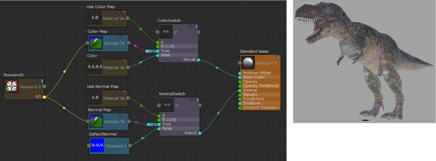
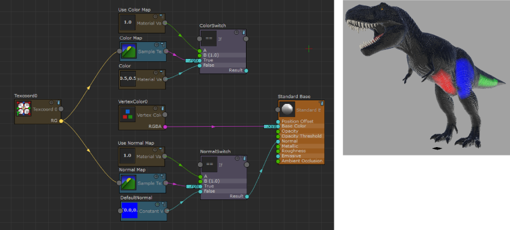
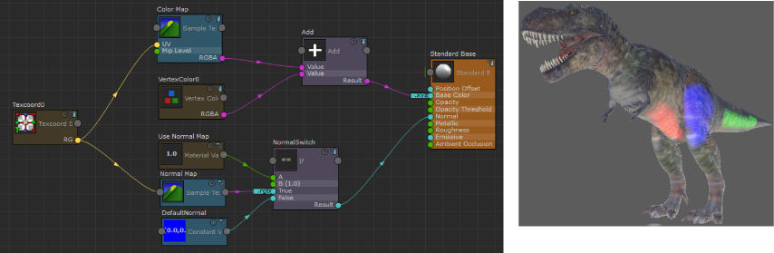

可以将顶点颜色通道添加到“Stingray PBS”ShaderFX 网络，然后绘制顶点。
在此示例中，首先创建 Stingray PBS 节点，然后使用 ShaderFX 编辑器将漫反射贴图和法线贴图连接到其着色器图表。有关这些任务的详细信息，请参见创建基于物理的 Stingray 着色器、使用 ShaderFX 编辑器构建基于物理的 Stingray 着色器和将贴图连接到基于物理的 Stingray 着色器。

将顶点颜色通道添加到“Stingray PBS”网络
- 创建“顶点颜色 0”(Vertex Color 0)节点（从节点浏览器拖放到工作区），并将它连接到“标准基础”(Standard Base)节点的“基础颜色”(Base Color)属性。
模型在视口中显示为黑色。
- 选择模型，然后选择“网格显示 > 绘制顶点颜色工具”(Mesh Display > Paint Vertex Color Tool) >
 （在“建模”(Modeling)菜单集中）。
（在“建模”(Modeling)菜单集中）。
- 请确保“绘制顶点颜色工具”(Paint Vertex Color Tool)设置中的“颜色值”(Color Value)颜色缸为黑色。单击“整体应用”(Flood)以确保所有顶点都从顶点颜色 0, 0, 0 开始。
仅当在之前尚未应用顶点颜色的对象上绘制时，此步骤才是必需的。
- 从“颜色值”(Color Value)颜色缸中选择其他颜色，然后绘制。
现在，可以在视口中看到模型上的已绘制区域。

添加带有基础颜色贴图的顶点颜色通道
- 创建“添加”(Add)节点。
- 删除“使用颜色贴图”(Use Color Map)、“颜色切换”(Color Switch)和“颜色”(Color)节点。
- 将“颜色贴图”(Color Map)的“RGBA”输出连接到“添加”(Add)的第一个输入。
- 将“顶点颜色 0”(Vertex Color 0)的“RGBA”输出连接到“添加”(Add)的第二个输入。
- 将“添加”(Add)的“结果”(Result)输出添加到“标准基础”(Standard Base)的“基础颜色”(Base Color)。
“添加”(Add)操作将生成 float4 输出 (RGBA)，但是“标准基础”(Standard Base)节点的“基础颜色”(Base Color)属性采用 float3 (xyz) 作为输入。float4 将自动转化为 float3。
现在，可以在 Viewport 2.0 中看到对象的颜色贴图和在模型上绘制的区域。
